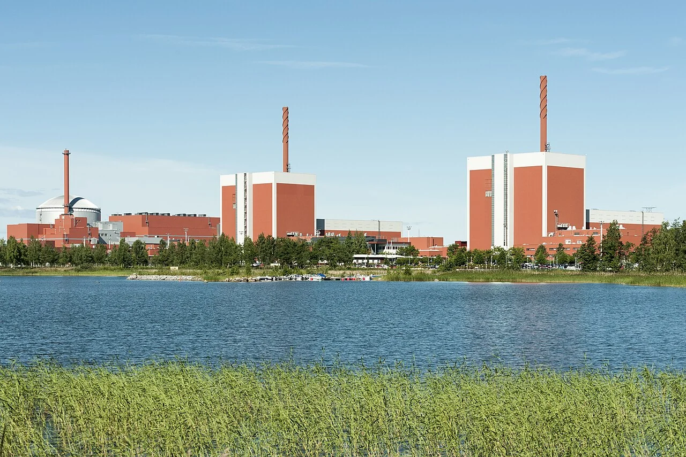
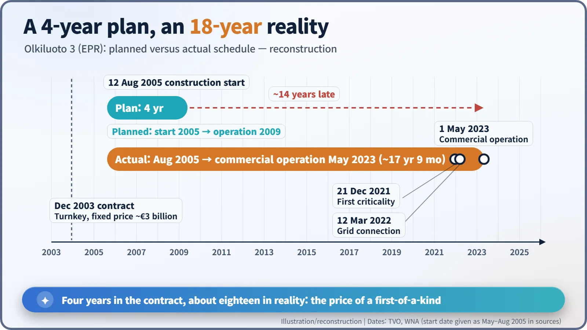
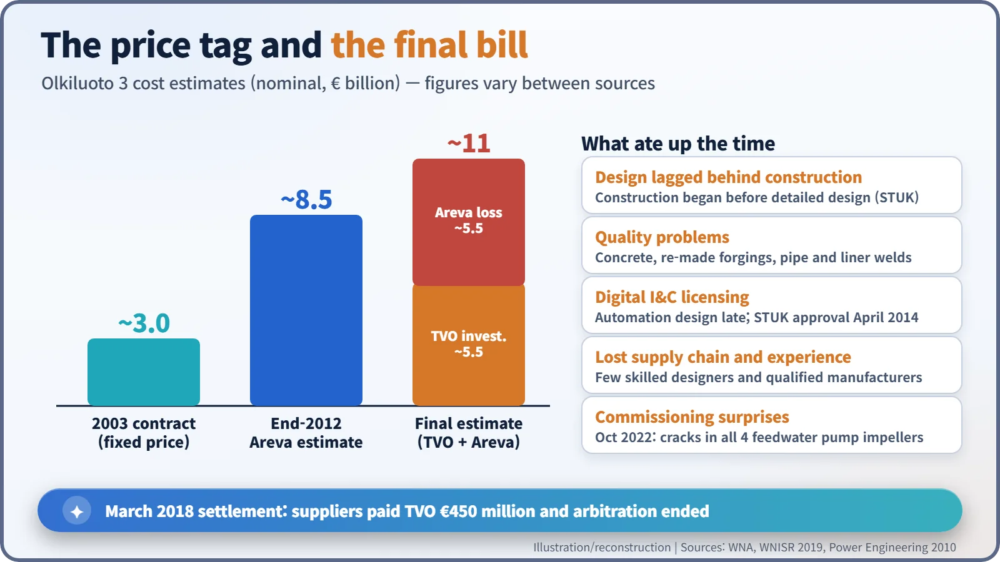
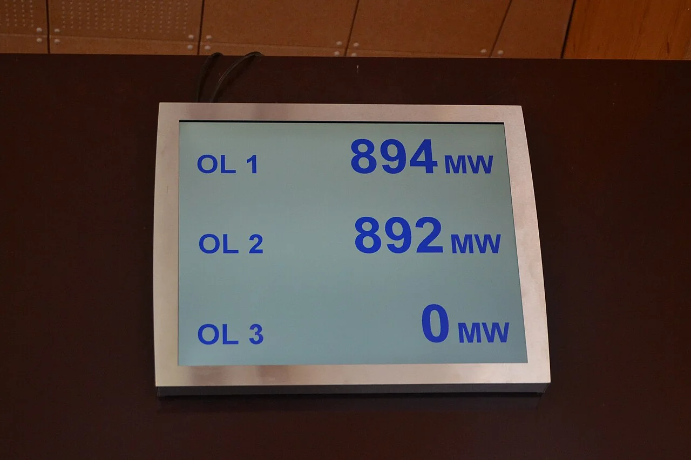
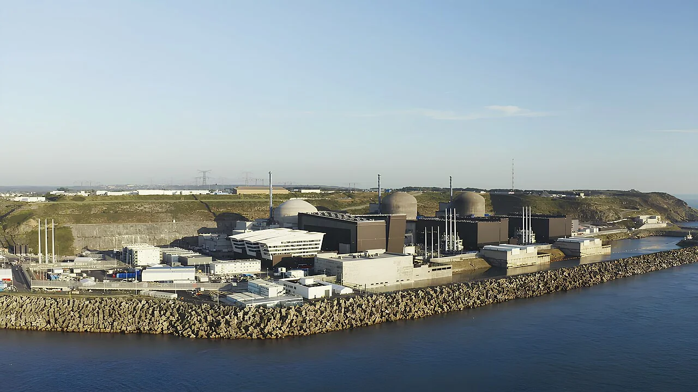

Nuclear History · 278
Four Years on Paper, Eighteen on the Calendar — Finland's Olkiluoto 3, the First EPR
A fixed-price, four-year turnkey contract became an eighteen-year lesson in design, quality and rebuilding the ability to build.
In December 2003 Finland's TVO ordered the world's first EPR, a 1,600 MWe pressurized water reactor, for a fixed price of about €3 billion and a four-year build. Construction started in August 2005, but late design, quality problems and slow licensing of the digital control system stretched the job to almost eighteen years. Olkiluoto 3 entered commercial operation on 1 May 2023, and its lessons became a checklist for every country trying to build reactors again.
If the contract had come true
If everything had gone by the contract, this story would have ended in 2009. On Olkiluoto island, on Finland's west coast, Europe's most powerful reactor would have started sending power to the grid, and Western Europe would have had its proof that it could still build nuclear plants. The real calendar told a different story. Olkiluoto 3 entered commercial operation on 1 May 2023. A four-year construction promise had turned into a journey of almost eighteen years from the first day on site. [1]
The first order in fifteen years
The Finnish utility TVO (Teollisuuden Voima) already ran two boiling water reactors on the island. In May 2002 the Finnish parliament approved a fifth reactor for the country by 107 votes to 92. In December 2003 TVO ordered a complete new unit from a consortium of France's Framatome ANP (later Areva NP) and Germany's Siemens. It was a turnkey deal at a fixed price of about €3 billion (some sources say €3.2 billion): the supplier would hand over the keys, and any overrun would be the supplier's problem. [3]
The design was the EPR, the European Pressurized Reactor, which combined the latest French and German pressurized water reactor technology. It is a giant: about 1,600 MWe net from 4,300 MW of heat. Its containment has two walls, designed to withstand even an aircraft impact, and beneath the core sits a "core catcher" built to hold molten fuel in the unlikely event of a meltdown. As the first new nuclear order in Western Europe in roughly fifteen years, it became a symbol of what was then called the "nuclear renaissance".

Ground broken, drawings not ready
The official construction start was 12 August 2005 (some sources give May or July 2005). Problems soon surfaced. Foundation concrete failed to meet specifications and cost several months. Large forgings from a subcontractor had to be made again. Welding defects turned up in piping and in the steel liner of the double containment.
In 2010 Jukka Laaksonen, director general of the Finnish regulator STUK, put his finger on the root cause: "In Olkiluoto 3 project, detailed design has been done too late." The construction time set in the call for bids, he wrote, "was therefore not realistic." He also warned that with a first-of-a-kind plant "one could expect thousands of smaller and bigger non-conformances." After decades without new builds in Western Europe, experienced nuclear designers and manufacturers who knew nuclear quality standards had become scarce. [4]
The longest hold-up was the digital instrumentation and control (I&C) system, the reactor's nervous system. STUK approved it only in April 2014. That February, Areva had sharply slowed work, citing among other things the unfinished automation design. The completion date slid to 2015, then to 2018, and kept sliding. [3]

Who got the bill?
A fixed price did not make the costs disappear. By the end of 2012, Areva itself estimated the total cost at about €8.5 billion. The consortium claimed €3.52 billion from TVO, and TVO counter-claimed €2.6 billion, in international arbitration. In March 2018 the dispute ended with a settlement under which the suppliers paid TVO €450 million. The final cost is estimated at about €11 billion: roughly €5.5 billion invested by TVO plus roughly €5.5 billion in losses for Areva. That figure is an estimate rather than an audited total, and numbers differ between sources. [3] [5]

Lights on at last, and one more test
The government granted the operating licence in March 2019, and the 241 fuel assemblies were loaded in spring 2021. The reactor first went critical on 21 December 2021 and first fed electricity to the grid on 12 March 2022. Even then the finish line kept moving. In October 2022, cracks were found in the impellers (the spinning blades that push water) of all four feedwater pumps, and the parts had to be replaced with sturdier ones. Regular electricity production finally began on 16 April 2023, and commercial operation on 1 May 2023. [1] [2]
TVO says that about 30 percent of Finnish electricity is produced at Olkiluoto. Its chief executive, Jarmo Tanhua, put it simply: "The production of Olkiluoto 3 stabilises the price of electricity." In 2025, nuclear power supplied about 40 percent of Finland's electricity. [2] [3]

That "0 MW" is a fitting footnote. The first annual outage, which began on 2 March 2024, was planned for 37 days and took 74. A first-of-a-kind plant keeps teaching lessons even after it starts running.
The weight of being "first"
Olkiluoto 3 was the first EPR to begin construction, but not the first to run commercially. That record went to China's Taishan 1, on 13 December 2018. France's Flamanville 3, started in 2007, was connected to the grid only in December 2024 and reached full power for the first time in December 2025. The first AP1000 units built in the United States went through similar delays. [6] [7]

The lesson of Olkiluoto 3 is less about the technology than about the ability to build again. Finish the design before you pour concrete. Rebuild broken supply chains and skilled workforces. And even under a turnkey contract, the owner must keep a firm grip on the project. Laaksonen's list became a checklist for countries preparing their own new reactors. [4]